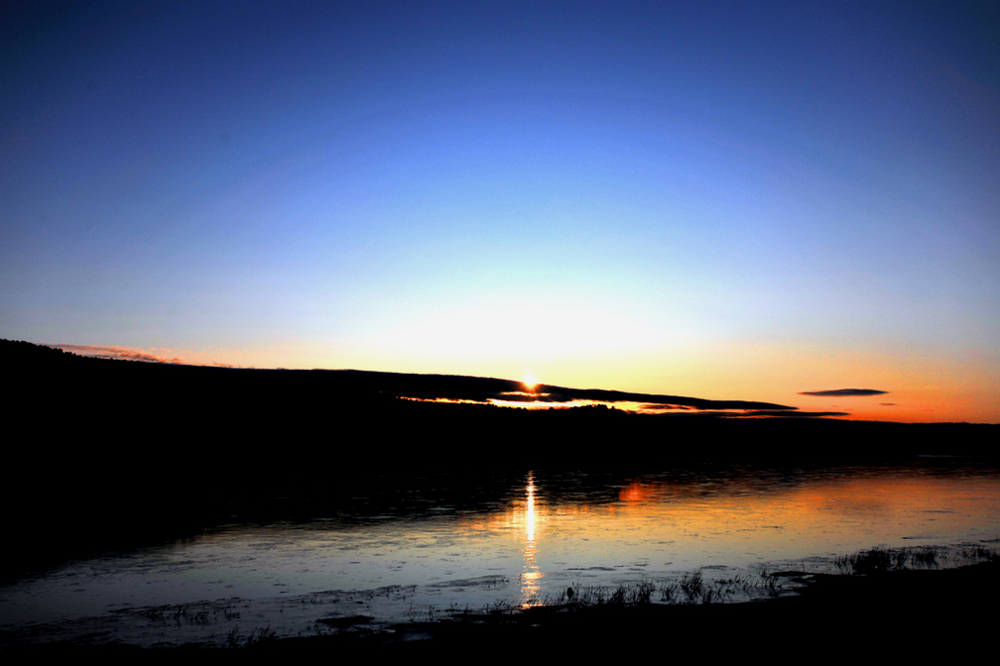
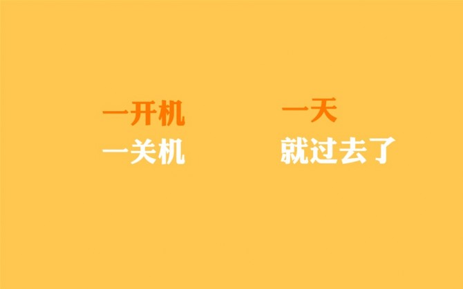
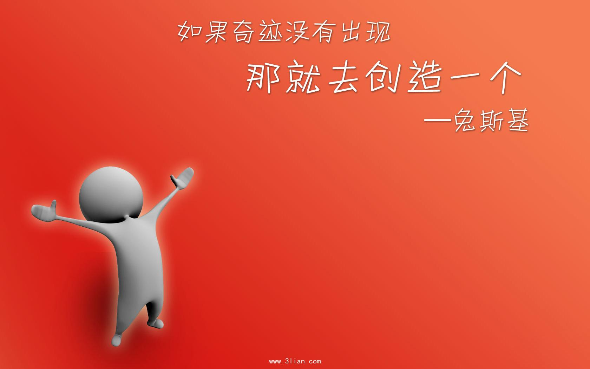

东 ，欢迎你 ！
我的主页
关于我
我的空间
千里之行 始于足下
无论对昨天多么失望，无论对昨天的自己多么失望，无论昨天多么不相信自己，今天的自己要努力为自己的自信存款，为明天的满意存款。勿以往之不谏，知来者之可追。一个人发现自己的无知不可怕，可怕的是麻木于无知。即使发现自己的渺小、无知，也不要放弃。既然做不好一件大事，那就把每一件小事做好吧！积土成山，积水成渊，从现在开始认真过好每一天，纵使梦想一千里远，也要从现在脚下的路一步一步向前走。加油！时代这么好，机会就在面前，有什么理由不努力？只是一个美好的时代，我来了。
珍惜每一天，特别是没有雾霾的晴天

以宽恕之心向后看，以希望之心向前看，以同情之心向下看，以感激之心向上看
如果一个人必须完成一件自己不喜欢的事，最好的办法就是尽快做好然后结束

如果你有大才华，就去追求大梦想；如果你觉得自己能力有限，才华不够支撑你的野心，那就安静下来，扎进小的失败和挫折中，汲取营养，如果不能成为豹子，那就成为一只漂亮高贵的梅花鹿也是好的，起码人见人爱————《迷茫就是才华配不上梦想》
当感觉无聊的时候，解决的最好办法就是，不要去想“无聊”这个词

Email：1419959278@qq.com
微信号：ld8289959278